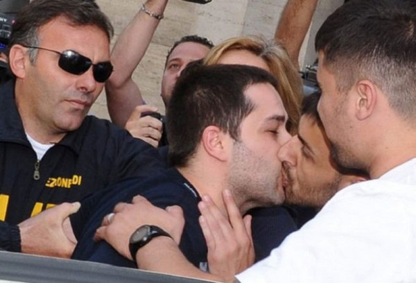

1. У зверей нет пупка
2. Одним из способов обороны Москвы в Великую отечественную войну были, подвешиваемые на аэростатах, «воздушные» мины
3. Сетку нельзя называть рабица. Следует, как и в случае с кубиком Рубика, говорить (и писать) именно сетка Рабица. Сетку так называют в честь каменщика Карла Рабица, который, собственно, её и изобрёл.
4. Долгое время думал, что pidgin это голубь.
5. Поцелуй мафиози это не признак гомосексуальных отношений, что вообще нелепо, когда речь идёт о мафиози. Два целующихся члена преступной группы дают таким образом обет (часто публичный) молчания.
